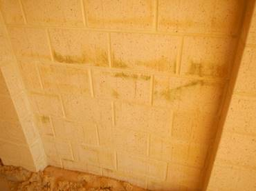

-
REPORT DETAILS
Report on (address) (the Property): Client name (the Client or you):
Client's phone number:
Client's email address:
Building inspector: Joshua Briggs
Builder's registration number: 101288
Company name: Master Building Inspectors
Company address and postcode Po Box 6249 Swanbourne WA 6010
Company email address info@masterbuildinginspectors.com.au
If you would like to discuss any aspect of this report please contact:
Joshua Briggs
0415 237 273
info@masterbuildinginspectors.com.au
-
SPECIAL CONDITIONS OR INSTRUCTIONS
A report may be conditional on information provided by a person, agents or employees of the person requesting the report, apparent concealment of possible defects and a range of other factors.
Special condition/instruction Comments N/A -
IMPORTANT INFORMATION TO HELP YOU INTERPRET THIS REPORT
-
DEFINED TERMS
This report uses the terms defined in Section VII. Where capitalised terms appear in this report you should give those terms the same meaning as set out in Section VI.
-
SCOPE, EXCLUSIONS AND LIMITATIONS
You should read Section VIII of this report in full. Section VII explains the scope of this report and the exclusions and limitations which apply to it. When reading this report you should interpret it in light of the exclusions and limitations set out in Section VIII. If you have any doubt about the purpose, scope and acceptance criteria on which the report is based please discuss your concerns with the Building Consultant on receipt of the report.
-
RECOMMENATIONS IN THIS REPORT
You acknowledge that, unless stated otherwise, you should as a matter of urgency implement any recommendation or advice given in this report.
-

NEW CONSTRUCTION INSPECTION SLAB STAGE
INSPECTION DATE:
PROPERTY ADDRESS:
